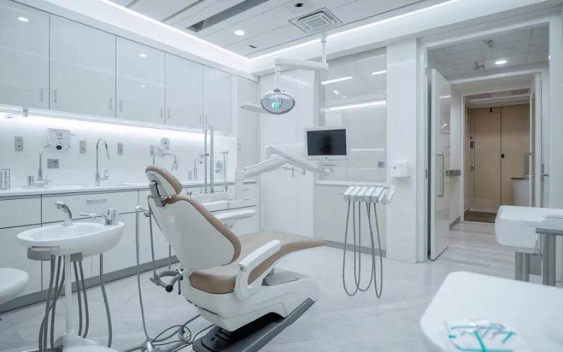
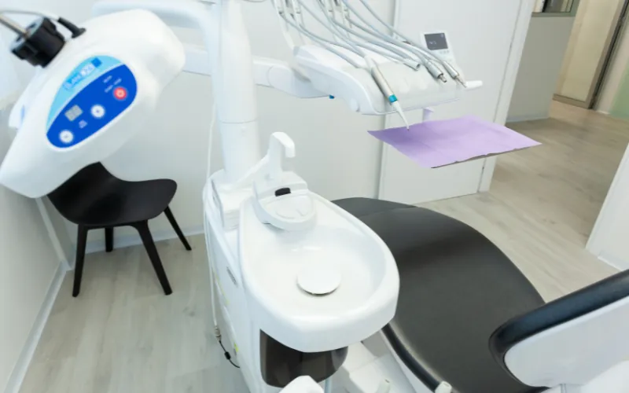
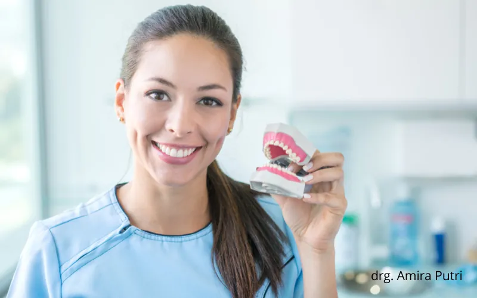
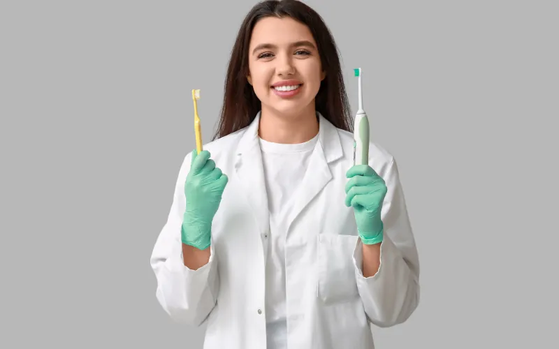
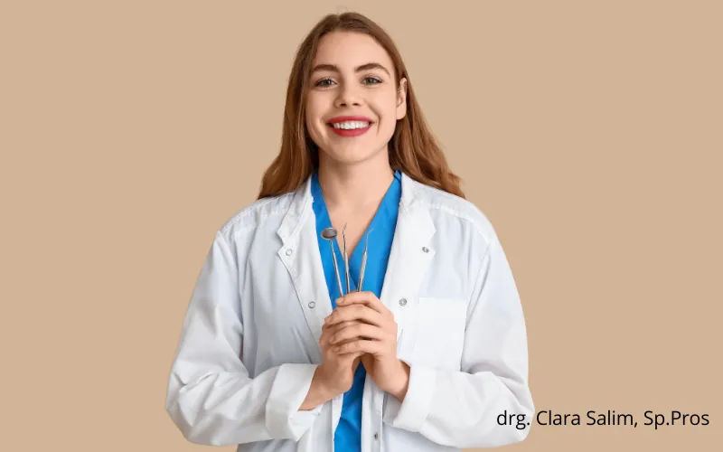

Amara Dental Studio dimulai dari satu ruang praktik kecil di tahun 2011, dan kini tumbuh menjadi klinik gigi yang dipercaya ribuan keluarga di Jakarta.

Amara Dental Studio didirikan oleh drg. Amara Wijaya pada 2011 dengan satu tujuan sederhana: menghadirkan perawatan gigi yang tidak membuat orang cemas untuk datang kembali. Berawal dari satu kursi perawatan, klinik ini tumbuh berkat kepercayaan pasien yang terus bertambah dari mulut ke mulut.
Kini, dengan sembilan dokter spesialis dan fasilitas yang terus diperbarui, kami tetap memegang nilai yang sama sejak hari pertama: mendengarkan pasien, menjelaskan dengan jujur, dan merawat dengan hati-hati.
Menjadi klinik gigi terpercaya yang membuat perawatan kesehatan mulut dapat diakses, nyaman, dan bebas kecemasan bagi semua kalangan.
Menghadirkan layanan berbasis bukti klinis dengan standar keamanan tertinggi di setiap tindakan.
Membantu pasien memahami kondisi dan pilihan perawatan mereka secara transparan.
Membangun hubungan berkelanjutan, bukan sekadar transaksi satu kali kunjungan.

Kami mendengarkan kekhawatiran setiap pasien sebelum menentukan langkah perawatan.
Rekomendasi perawatan selalu berdasarkan kebutuhan medis, bukan target penjualan.
Terus memperbarui pengetahuan dan alat agar perawatan makin efisien dan minim nyeri.
Setiap staf dilatih untuk memperlakukan pasien layaknya keluarga sendiri.
Klinik pertama dibuka di Kemang dengan satu dokter dan satu kursi perawatan.
Menambah tim spesialis ortodonti dan membuka layanan gigi anak.
Meluncurkan sistem reservasi digital dan rontgen 3D pertama di klinik.
Membuka cabang kedua dan ketiga untuk menjangkau lebih banyak keluarga.
Melayani lebih dari 12.400 pasien dengan sembilan dokter spesialis aktif.
Setiap dokter kami menjalani pelatihan berkelanjutan dan bersertifikat dari organisasi profesi terkait.

12 tahun pengalaman, fokus pada perawatan preventif keluarga.

Ahli behel dan clear aligner untuk remaja maupun dewasa.
Menangani perawatan saluran akar dan restorasi estetik.
Menangani pencabutan kompleks hingga implan gigi.
Pendekatan ramah anak untuk kunjungan pertama yang menyenangkan.

Ahli gigi tiruan, mahkota, dan restorasi kompleks.
Setiap sudut klinik kami dirancang untuk mengurangi kecemasan dan mendukung proses perawatan yang efektif.